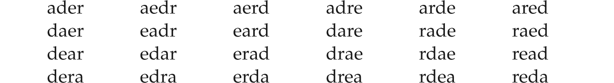
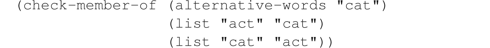
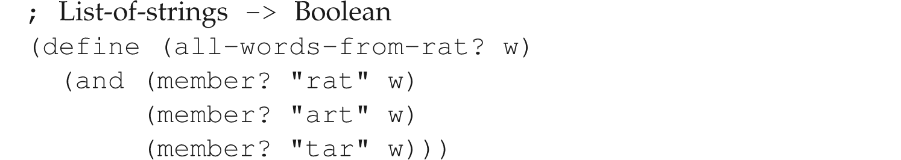
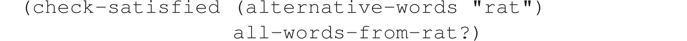
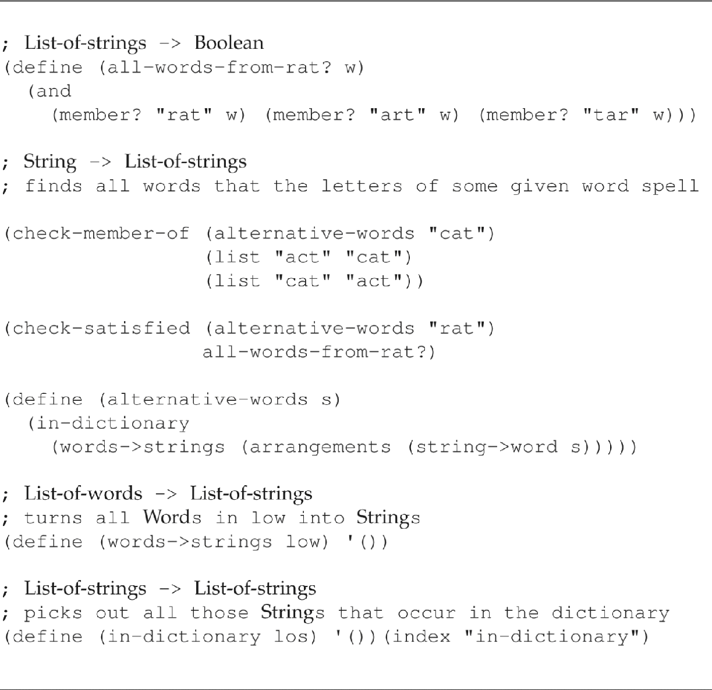

12.3 Word Games, Composition Illustrated
Some of you solve word puzzles in newspapers and magazines. Try this:
Sample Problem Given a word, find all words that are made up from the same letters. For example “cat” also spells “act.”
Let’s work through an example. Suppose you are given “dear.” There are twenty-four possible arrangements of the four letters:

In this list, there are three legitimate words: “read,” “dear,” and “dare.”
Note If a word contains the same letter twice, the collection of all re-arrangements may contain several copies of the same string. For our purposes, this is acceptable. For a realistic program, you may wish to avoid duplicate entries by using sets instead of lists. See chapter 9.6. End
A systematic enumeration of all possible arrangements is clearly a task for a program, as is the search in an English-language dictionary. This section covers the design of the search function, leaving the solution of the other problem to the next section. By separating the two, this first section can focus on the high-level ideas of systematic program design.
See chapter 12.1 for dealing with real-world dictionaries.
Let’s imagine for a moment how we might solve the problem by hand. If you had enough time, you might enumerate all possible arrangements of all letters in a given word and then just pick those variants that also occur in a dictionary. Clearly, a program can proceed in this way too, and this suggests a natural design by composition, but, as always, we proceed systematically and start by choosing a data representation for our inputs and outputs.
At least at first glance, it is natural to represent words as Strings and the result as a list of words or List-of-strings. Based on this choice, we can formulate a signature and purpose statement:
; String -> List-of-strings
; finds all words that use the same letters as s
(define (alternative-words s)
…)
Next, we need some examples. If the given word is “cat,” we are dealing with three letters: c, a, and t. Some playing around suggests six arrangements of these letters: cat, cta, tca, tac, act, and atc. Two of these are actual words: “cat” and “act.” Because alternative-words produces a list of Strings, there are two ways to represent the result: (list "act" "cat") and (list "cat" "act"). Fortunately, BSL comes with a way to say the function returns one of two possible results:

Stop! Read up on check-member-of in the documentation.
Working through this example exposes two problems:
• The first one is about testing. Suppose we had used the word “rat” for which there are three alternatives: “rat,” “tar,” and “art.” In this case, we would have to formulate six lists, each of which might be the result of the function. For a word like “dear” with four possible alternatives, formulating a test would be even harder.
• The second problem concerns the choice of word representation. Although String looks natural at first, the examples clarify that some of our functions must view words as sequences of letters, with the possibility of rearranging them at will. It is possible to rearrange the letters within a String, but lists of letters are obviously better suited for this purpose.
Let’s deal with these problems one at a time, starting with tests.
Assume we wish to formulate a test for alternative-words and "rat". From the above, we know that the result must contain "rat", "tar", and "art", but we cannot know in which order these words show up in the result.
In this situation, check-satisfied comes in handy. We can use it with a function that checks whether a list of Strings contains our three Strings:

See intermezzo 1.
With this function, it is easy to formulate a test for alternative-words:

Note on Data versus Design What this discussion suggests is that the alternative-words function constructs a set, not a list. For a detailed discussion of the differences, see chapter 9.6. Here it suffices to know that sets represent collections of values without regard to the ordering of the values or how often these values occur. When a language comes without support for data representations of sets, programmers tend to resort to a close alternative, such as the List-of-strings representation here. As programs grow, this choice may haunt programmers, but addressing this kind of problem is the subject of the second book. End
For the problem with a word representation, we punt to the next section. Specifically, we say that the next section introduces (1) a data representation for Words suitable for rearranging letters, (2) a data definition for List-of-words, and (3) a function that maps a Word to a List-of-words, meaning a list of all possible rearrangements:
; A Word is …
; A List-of-words is …
; Word -> List-of-words
; finds all rearrangements of word
(define (arrangements word)
(list word))
Exercise 209. The above leaves us with two additional wishes: a function that consumes a String and produces its corresponding Word, and a function for the opposite direction. Here are the wish-list entries:
; String -> Word
; converts s to the chosen word representation
(define (string->word s) …)
; Word -> String
; converts w to a string
(define (word->string w) …)
Look up the data definition for Word in the next section and complete the definitions of string->word and word->string. Hint You may wish to look in the list of functions that BSL provides. 
With those two small problems out of the way, we return to the design of alternative-words. We now have: (1) a signature, (2) a purpose statement, (3) examples and test, (4) an insight concerning our choice of data representation, and (5) an idea of how to decompose the problem into two major steps.
So, instead of creating a template, we write down the composition we have in mind:
(in-dictionary (arrangements s))
The expression says that, given a word s, we use arrangements to create a list of all possible rearrangements of the letters and in-dictionary to select those rearrangements that also occur in a dictionary.
Stop! Look up the signatures for the two functions to make sure the composition works out. What exactly do you need to check?
What this expression fails to capture is the fourth point, the decision not to use plain strings to rearrange the letters. Before we hand s to arrangements, we need to convert it into a word. Fortunately, exercise 209 asks for just such a function:
(in-dictionary
(… (arrangements (string->word s))))
Similarly, we need to convert the resulting list of words to a list of strings. While exercise 209 asks for a function that converts a single word, here we need a function that deals with lists of them. Time to make another wish:
(in-dictionary
(words->strings
(arrangements (string->word s))))
Stop! What is the signature for words->strings and what is its purpose?
Figure 78 collects all the pieces. The following exercises ask you to design the remaining functions.

Figure 78: Finding alternative words
Exercise 210. Complete the design of the words->strings function specified in figure 78. Hint Use your solution to exercise 209.
Exercise 211. Complete the design of in-dictionary, specified in figure 78. Hint See chapter 12.1 for how to read a dictionary.